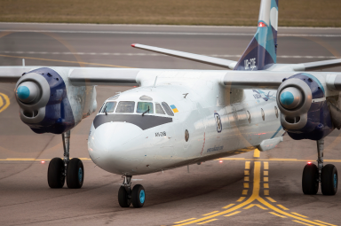
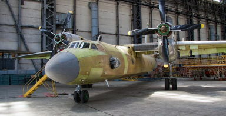

Найбільша гордість УЛА - високопрофесійні інженери і співробітники підприємства, що мають багаторічний досвід роботи на авіаремонтних підприємствах України.
Вони тісно співпрацюsють з конструкторами, підприємствами авіабудування, науково-дослідними центрами і організаціями. Повний цикл обслуговування і ремонту здійснюється на сучасній ремонтній базі з необхідним обладнанням.
Наша місія почати нове життя літаків Антонов, які вже довели свою ефективність в усьому світі.
дізнатися більше ->